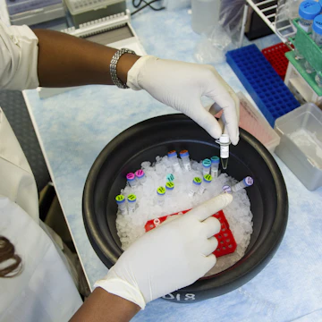

Stackly is an interdisciplinary research institute running 42 labs across 18 countries — built on one premise: a finding that never leaves the journal isn't finished.

We run research rigorous enough that a stranger gets the same result — then we carry every real finding past the paper, into clinics, satellites, and supply chains, measured in months instead of decades.
Not values on a poster — the standards every Research is checked against before it ships.
Every result is independently re-run by a team that didn't conduct the original experiment before it's cleared for publication.
Negative results are published alongside positive ones; funding source never decides what we're allowed to find.
Raw datasets and methodology ship to partner institutions by default, so the next lab isn't starting from zero.
Every flagship Research carries a path to clinics, satellites, or supply chains from day one — not just a journal slot.
Each card is a chapter — scroll horizontally or watch them glide.
Three researchers and a borrowed mass spectrometer in a shared Cambridge facility.
Accreditation opens the door to clinical and pharmaceutical partnerships across Europe.
Space bioscience and renewable energy join the research roster as the network scales.
Stackly-led research crosses 1,000 citations across Nature, Science, and Cell.
Seven research domains, 200+ scientists, the same founding premise.
Select a researcher to read their field note.
Molecular biologist who scaled one shared bench into a 42-lab global network. Still keeps a bench of her own.